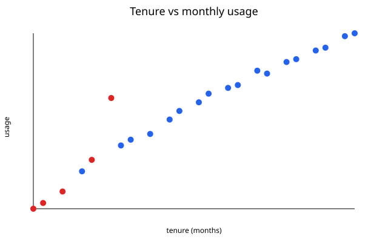

Select a module to see its evidence, method, and takeaway.
01INGESTION + VALIDATION
Clean the signal
Before a model sees the data, the lab makes the input trustworthy: it removes the duplicate customer, converts numeric fields, and fills one missing value with a median.
Artifact evidence
Tenure × monthly usage

Loading SVG artifact…
Renewed customers trend toward longer tenure and higher monthly usage.SVG / generated by Python
↳
Read the evidence, not the hype.These metrics describe a teaching fixture—not a production forecast.
⌘
Runs without a network.Python standard library + browser-native HTML, CSS, and JavaScript.